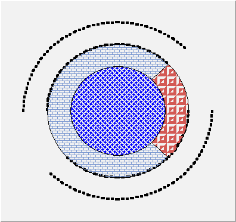
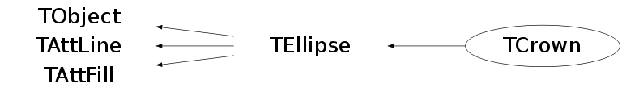

class TCrown: public TEllipse
TCrown : to draw crown
Example:
{kind=link}

{
TCanvas *c1 = new TCanvas("c1","c1",400,400);
TCrown cr1(.5,.5,.3,.4);
cr1->SetLineStyle(2);
cr1->SetLineWidth(4);
cr1.Draw();
TCrown cr2(.5,.5,.2,.3,45,315);
cr2.SetFillColor(38);
cr2.SetFillStyle(3010);
cr2.Draw();
TCrown cr3(.5,.5,.2,.3,-45,45);
cr3.SetFillColor(50);
cr3.SetFillStyle(3025);
cr3.Draw();
TCrown cr4(.5,.5,.0,.2);
cr4.SetFillColor(4);
cr4.SetFillStyle(3008);
cr4.Draw();
return c1;
}Function Members (Methods)
public:
| TCrown() | |
| TCrown(const TCrown& crown) | |
| TCrown(Double_t x1, Double_t y1, Double_t radin, Double_t radout, Double_t phimin = 0, Double_t phimax = 360) | |
| virtual | ~TCrown() |
| void | TObject::AbstractMethod(const char* method) const |
| virtual void | TObject::AppendPad(Option_t* option = "") |
| virtual void | TObject::Browse(TBrowser* b) |
| static TClass* | Class() |
| virtual const char* | TObject::ClassName() const |
| virtual void | TObject::Clear(Option_t* = "") |
| virtual TObject* | TObject::Clone(const char* newname = "") const |
| virtual Int_t | TObject::Compare(const TObject* obj) const |
| virtual void | Copy(TObject& crown) const |
| virtual void | TObject::Delete(Option_t* option = "")MENU |
| Int_t | TAttLine::DistancetoLine(Int_t px, Int_t py, Double_t xp1, Double_t yp1, Double_t xp2, Double_t yp2) |
| virtual Int_t | DistancetoPrimitive(Int_t px, Int_t py) |
| virtual void | TEllipse::Draw(Option_t* option = "") |
| virtual void | TObject::DrawClass() constMENU |
| virtual TObject* | TObject::DrawClone(Option_t* option = "") constMENU |
| virtual void | DrawCrown(Double_t x1, Double_t y1, Double_t radin, Double_t radout, Double_t phimin = 0, Double_t phimax = 360, Option_t* option = "") |
| virtual void | TEllipse::DrawEllipse(Double_t x1, Double_t y1, Double_t r1, Double_t r2, Double_t phimin, Double_t phimax, Double_t theta, Option_t* option = "") |
| virtual void | TObject::Dump() constMENU |
| virtual void | TObject::Error(const char* method, const char* msgfmt) const |
| virtual void | TObject::Execute(const char* method, const char* params, Int_t* error = 0) |
| virtual void | TObject::Execute(TMethod* method, TObjArray* params, Int_t* error = 0) |
| virtual void | ExecuteEvent(Int_t event, Int_t px, Int_t py) |
| virtual void | TObject::Fatal(const char* method, const char* msgfmt) const |
| virtual TObject* | TObject::FindObject(const char* name) const |
| virtual TObject* | TObject::FindObject(const TObject* obj) const |
| virtual Option_t* | TObject::GetDrawOption() const |
| static Long_t | TObject::GetDtorOnly() |
| virtual Color_t | TAttFill::GetFillColor() const |
| virtual Style_t | TAttFill::GetFillStyle() const |
| virtual const char* | TObject::GetIconName() const |
| virtual Color_t | TAttLine::GetLineColor() const |
| virtual Style_t | TAttLine::GetLineStyle() const |
| virtual Width_t | TAttLine::GetLineWidth() const |
| virtual const char* | TObject::GetName() const |
| Bool_t | TEllipse::GetNoEdges() const |
| virtual char* | TObject::GetObjectInfo(Int_t px, Int_t py) const |
| static Bool_t | TObject::GetObjectStat() |
| virtual Option_t* | TObject::GetOption() const |
| Double_t | TEllipse::GetPhimax() const |
| Double_t | TEllipse::GetPhimin() const |
| Double_t | TEllipse::GetR1() const |
| Double_t | TEllipse::GetR2() const |
| Double_t | TEllipse::GetTheta() const |
| virtual const char* | TObject::GetTitle() const |
| virtual UInt_t | TObject::GetUniqueID() const |
| Double_t | TEllipse::GetX1() const |
| Double_t | TEllipse::GetY1() const |
| virtual Bool_t | TObject::HandleTimer(TTimer* timer) |
| virtual ULong_t | TObject::Hash() const |
| virtual void | TObject::Info(const char* method, const char* msgfmt) const |
| virtual Bool_t | TObject::InheritsFrom(const char* classname) const |
| virtual Bool_t | TObject::InheritsFrom(const TClass* cl) const |
| virtual void | TObject::Inspect() constMENU |
| void | TObject::InvertBit(UInt_t f) |
| virtual TClass* | IsA() const |
| virtual Bool_t | TObject::IsEqual(const TObject* obj) const |
| virtual Bool_t | TObject::IsFolder() const |
| Bool_t | TObject::IsOnHeap() const |
| virtual Bool_t | TObject::IsSortable() const |
| virtual Bool_t | TAttFill::IsTransparent() const |
| Bool_t | TObject::IsZombie() const |
| virtual void | TEllipse::ls(Option_t* option = "") const |
| void | TObject::MayNotUse(const char* method) const |
| virtual void | TAttLine::Modify() |
| virtual Bool_t | TObject::Notify() |
| void | TObject::Obsolete(const char* method, const char* asOfVers, const char* removedFromVers) const |
| static void | TObject::operator delete(void* ptr) |
| static void | TObject::operator delete(void* ptr, void* vp) |
| static void | TObject::operator delete[](void* ptr) |
| static void | TObject::operator delete[](void* ptr, void* vp) |
| void* | TObject::operator new(size_t sz) |
| void* | TObject::operator new(size_t sz, void* vp) |
| void* | TObject::operator new[](size_t sz) |
| void* | TObject::operator new[](size_t sz, void* vp) |
| TCrown& | operator=(const TCrown&) |
| virtual void | Paint(Option_t* option = "") |
| virtual void | TEllipse::PaintEllipse(Double_t x1, Double_t y1, Double_t r1, Double_t r2, Double_t phimin, Double_t phimax, Double_t theta, Option_t* option = "") |
| virtual void | TObject::Pop() |
| virtual void | TEllipse::Print(Option_t* option = "") const |
| virtual Int_t | TObject::Read(const char* name) |
| virtual void | TObject::RecursiveRemove(TObject* obj) |
| virtual void | TAttFill::ResetAttFill(Option_t* option = "") |
| virtual void | TAttLine::ResetAttLine(Option_t* option = "") |
| void | TObject::ResetBit(UInt_t f) |
| virtual void | TObject::SaveAs(const char* filename = "", Option_t* option = "") constMENU |
| virtual void | TAttFill::SaveFillAttributes(ostream& out, const char* name, Int_t coldef = 1, Int_t stydef = 1001) |
| virtual void | TAttLine::SaveLineAttributes(ostream& out, const char* name, Int_t coldef = 1, Int_t stydef = 1, Int_t widdef = 1) |
| virtual void | SavePrimitive(ostream& out, Option_t* option = "") |
| void | TObject::SetBit(UInt_t f) |
| void | TObject::SetBit(UInt_t f, Bool_t set) |
| virtual void | TObject::SetDrawOption(Option_t* option = "")MENU |
| static void | TObject::SetDtorOnly(void* obj) |
| virtual void | TAttFill::SetFillAttributes()MENU |
| virtual void | TAttFill::SetFillColor(Color_t fcolor) |
| virtual void | TAttFill::SetFillStyle(Style_t fstyle) |
| virtual void | TAttLine::SetLineAttributes()MENU |
| virtual void | TAttLine::SetLineColor(Color_t lcolor) |
| virtual void | TAttLine::SetLineStyle(Style_t lstyle) |
| virtual void | TAttLine::SetLineWidth(Width_t lwidth) |
| virtual void | TEllipse::SetNoEdges(Bool_t noEdges = kTRUE)TOGGLE GETTER |
| static void | TObject::SetObjectStat(Bool_t stat) |
| virtual void | TEllipse::SetPhimax(Double_t phi = 360)MENU |
| virtual void | TEllipse::SetPhimin(Double_t phi = 0)MENU |
| virtual void | TEllipse::SetR1(Double_t r1)MENU |
| virtual void | TEllipse::SetR2(Double_t r2)MENU |
| virtual void | TEllipse::SetTheta(Double_t theta = 0)MENU |
| virtual void | TObject::SetUniqueID(UInt_t uid) |
| virtual void | TEllipse::SetX1(Double_t x1)MENU |
| virtual void | TEllipse::SetY1(Double_t y1)MENU |
| virtual void | ShowMembers(TMemberInspector& insp) |
| virtual void | Streamer(TBuffer& b) |
| void | StreamerNVirtual(TBuffer& b) |
| virtual void | TObject::SysError(const char* method, const char* msgfmt) const |
| Bool_t | TObject::TestBit(UInt_t f) const |
| Int_t | TObject::TestBits(UInt_t f) const |
| virtual void | TObject::UseCurrentStyle() |
| virtual void | TObject::Warning(const char* method, const char* msgfmt) const |
| virtual Int_t | TObject::Write(const char* name = 0, Int_t option = 0, Int_t bufsize = 0) |
| virtual Int_t | TObject::Write(const char* name = 0, Int_t option = 0, Int_t bufsize = 0) const |
protected:
| virtual void | TObject::DoError(int level, const char* location, const char* fmt, va_list va) const |
| void | TObject::MakeZombie() |
Data Members
public:
| enum TEllipse::[unnamed] { | kNoEdges | |
| }; | ||
| enum TObject::EStatusBits { | kCanDelete | |
| kMustCleanup | ||
| kObjInCanvas | ||
| kIsReferenced | ||
| kHasUUID | ||
| kCannotPick | ||
| kNoContextMenu | ||
| kInvalidObject | ||
| }; | ||
| enum TObject::[unnamed] { | kIsOnHeap | |
| kNotDeleted | ||
| kZombie | ||
| kBitMask | ||
| kSingleKey | ||
| kOverwrite | ||
| kWriteDelete | ||
| }; |
protected:
| Color_t | TAttFill::fFillColor | fill area color |
| Style_t | TAttFill::fFillStyle | fill area style |
| Color_t | TAttLine::fLineColor | line color |
| Style_t | TAttLine::fLineStyle | line style |
| Width_t | TAttLine::fLineWidth | line width |
| Double_t | TEllipse::fPhimax | Maximum angle (degrees) |
| Double_t | TEllipse::fPhimin | Minimum angle (degrees) |
| Double_t | TEllipse::fR1 | first radius |
| Double_t | TEllipse::fR2 | second radius |
| Double_t | TEllipse::fTheta | Rotation angle (degrees) |
| Double_t | TEllipse::fX1 | X coordinate of centre |
| Double_t | TEllipse::fY1 | Y coordinate of centre |
Class Charts
{kind=link}
{kind=link}
{kind=link}
{kind=link}

Function documentation
TCrown(Double_t x1, Double_t y1, Double_t radin, Double_t radout, Double_t phimin = 0, Double_t phimax = 360)
Crown normal constructor.
- x1,y1 : coordinates of centre of crown
- radin : inner crown radius
- radout : outer crown radius
- phimin : min angle in degrees (default is 0)
- phimax : max angle in degrees (default is 360)
Int_t DistancetoPrimitive(Int_t px, Int_t py)
Compute distance from point px,py to a crown.
If crown is filled, return OK if we are inside otherwise, crown is found if near the crown edges.
void DrawCrown(Double_t x1, Double_t y1, Double_t radin, Double_t radout, Double_t phimin = 0, Double_t phimax = 360, Option_t* option = "")
Draw this crown with new coordinates.
void ExecuteEvent(Int_t event, Int_t px, Int_t py)
Execute action corresponding to one event
For the time being TEllipse::ExecuteEvent is used.
void SavePrimitive(ostream& out, Option_t* option = "")
Save primitive as a C++ statement(s) on output stream out.